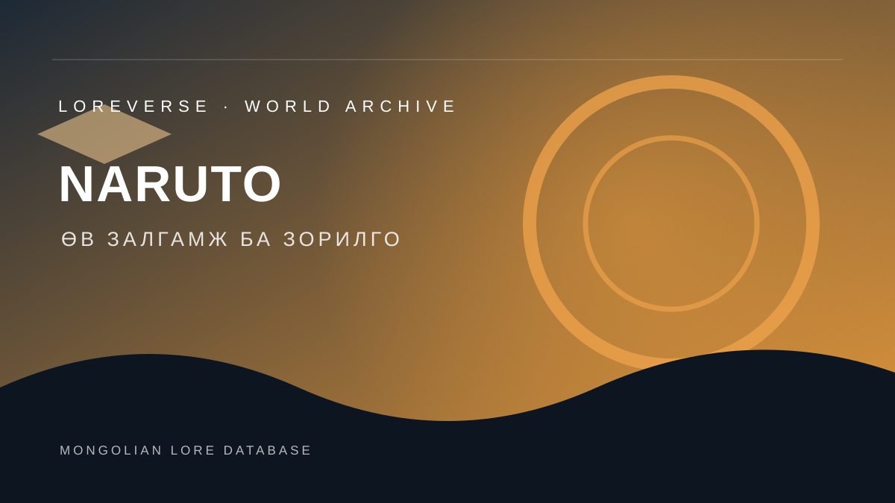

Ертөнц ба түүхэн нөхцөл
Шиноби ертөнц нь Таван Их Улс болон тэдгээрийн нуугдмал тосгодод хуваагдана. Улс төрийн эвсэл, дайны түүх, овгийн уламжлал, сүүлт араатнуудын хүч нь олон үеийн мөргөлдөөнийг бий болгодог.
Нуугдмал Навчит тосгоны гадуурхагдсан хүү Үзүмaki Наруто Хокагэ болохыг мөрөөднө. Баг 7-д нэгдсэнээр тэр нөхөрлөл, өрсөлдөөн, дайны өв, нинжагийн ертөнцийн нууцуудтай нүүр тулна.

Шиноби ертөнц нь Таван Их Улс болон тэдгээрийн нуугдмал тосгодод хуваагдана. Улс төрийн эвсэл, дайны түүх, овгийн уламжлал, сүүлт араатнуудын хүч нь олон үеийн мөргөлдөөнийг бий болгодог.
Чакра нь биеийн болон оюун санааны энергийг нэгтгэнэ. Нинжүцү, Тайжүцү, Генжүцү, Кеккей Генкай, Дожүцү зэрэг ангилалтай. Байгалийн хувирал, Инь-Ян, Сэйж горим нь чадварын илүү нарийн түвшинг илэрхийлнэ.
Үзүмaki Наруто — Кюүбигийн хүчийг агуулсан нинжа; Үчиха Сасүкэ — өшөө авалт, овгийн өвтэй холбоотой; Харуно Сакүра — эмчилгээний нинжүцүгийн чадвартай; Хатакэ Какаши — Баг 7-ийн багш; Жирайя — Наруто-ийн багш, домогт саннин.
Нуугдмал Навч, Элс, Манан, Чулуу, Үүл тосгод; Акацүки; Самурайн Төмөр улс; Даймё нарын улс төрийн бүтэц. Акацүкиг зөвхөн нэг төрлийн муу бүлэг гэж тайлбарлах нь тэдний зорилгын ялгааг орхигдуулна.
Наруто академид суралцах → Баг 7 ба эхний даалгаврууд → Чүнин шалгалт → Сасүкэг эргүүлэн авчрах оролдлого → Шиппүдэнгийн үе → Дөрөвдүгээр Их Нинжагийн дайн.
Албан ёсны анимэний сайт: https://naruto-official.com/
Naruto, Naruto: Shippuden, кино, filler анги болон Boruto-г тусдаа continuity ангиллаар авч үзнэ.
Энэ хуудас нь LOREVERSE-ийн Монгол хэл дээрх фэн судалгааны материал. Албан ёсны бүтээл биш. Канон, дасан зохицуулалт, фэн таамгийг тусад нь тэмдэглэн шинэчилнэ.